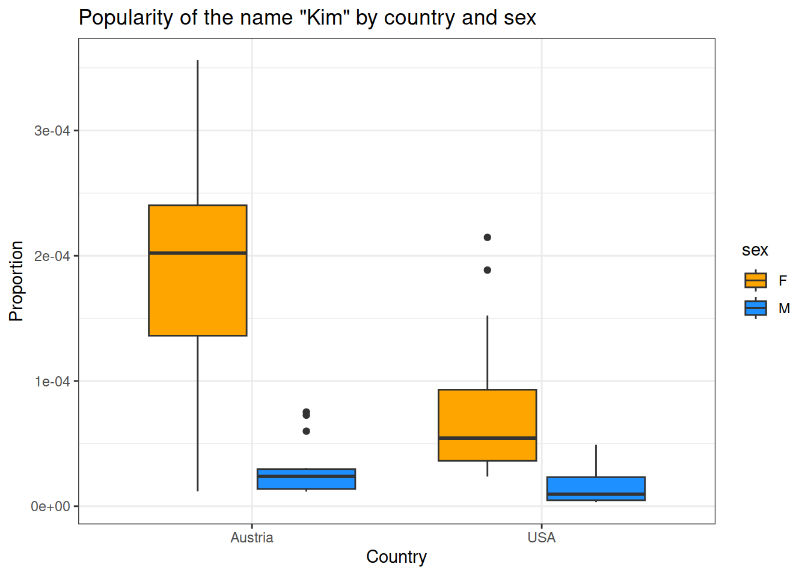

Lesson 3 extension: Data wrangling, t-tests and ANOVA
Course website: https://hannahmetzler.eu/R_intro/
Author
Hannah Metzler
Published
March 27, 2024
1 Project for extension of lesson 3: Comparison of baby names in Austria and the US
What about baby names in Austria?
Below, we read in data from Austria, make it comparable to the US data set, and then run a t-test to compare the popularity of baby names in the two countries.
2 Reading in and looking at data
2.1 Data from Austria
I downloaded data about given names in Austria from 1984 to 2022 from data.bv.at. Download the first file from there and put it into your data folder.
Continue working in your cleaning script from lesson 3, in the # READ DATA #### section.
To read the Austrian data, try the function csv().
Add this after the lines that read in the data from the USA.
# A tibble: 6 × 5
`C-JAHR-0` `C-WOHNBEZIRK-0` `C-GESCHLECHT-0` `F-VORNAME_NORMALISIERT`
<dbl> <dbl> <dbl> <chr>
1 1984 101 1 Andreas
2 1984 101 1 Bernd
3 1984 101 1 Christian
4 1984 101 1 Christoph
5 1984 101 1 Clemens
6 1984 101 1 Daniel
# ℹ 1 more variable: `F-ANZAHL_LGEB` <dbl>
2.2 Data from the US
Here, I load the baby names data set, a default package included in the library “babynames”. To run the code below, you first need to install the package, and then load it by adding library(babynames) in your section for loading packages. This dataset, as opposed to the smaller one we used in lesson 3, includes all given names in the US, not just the ones from our course participants. Assign the dataset to data_usa.
# load the datasetdata(babynames)# assign it to data_usadata_usa = babynames
3 Get an overview of the dataset
To get an overview of this new data set, you could use any of the following functions:
summary() shows us that the earliest year in the data is 1984, the latest one 2022.
It also shows us that the column “Geschlecht” (sex) is not yet coded as a categorical variable.
summary(data_aut)
C-JAHR-0 C-WOHNBEZIRK-0 C-GESCHLECHT-0 F-VORNAME_NORMALISIERT
Min. :1984 Min. :101 Min. :1.000 Length:1265460
1st Qu.:1996 1st Qu.:319 1st Qu.:1.000 Class :character
Median :2007 Median :506 Median :2.000 Mode :character
Mean :2005 Mean :563 Mean :1.535
3rd Qu.:2015 3rd Qu.:804 3rd Qu.:2.000
Max. :2022 Max. :923 Max. :2.000
F-ANZAHL_LGEB
Min. : 1.00
1st Qu.: 1.00
Median : 1.00
Mean : 2.36
3rd Qu.: 2.00
Max. :76.00
The function View() opens the data in an extra window.
View(data_aut)
The function str() shows you the structure of the data set.
# A tibble: 6 × 5
year living_district sex name n
<dbl> <dbl> <dbl> <chr> <dbl>
1 1984 101 1 Andreas 4
2 1984 101 1 Bernd 1
3 1984 101 1 Christian 2
4 1984 101 1 Christoph 2
5 1984 101 1 Clemens 1
6 1984 101 1 Daniel 3
4.2 Selecting rows
If we compare the US and the Austrian data set, we can see that they cover different time spans.
summary(data_usa)
year sex name n
Min. :1880 Length:1924665 Length:1924665 Min. : 5.0
1st Qu.:1951 Class :character Class :character 1st Qu.: 7.0
Median :1985 Mode :character Mode :character Median : 12.0
Mean :1975 Mean : 180.9
3rd Qu.:2003 3rd Qu.: 32.0
Max. :2017 Max. :99686.0
prop
Min. :2.260e-06
1st Qu.:3.870e-06
Median :7.300e-06
Mean :1.363e-04
3rd Qu.:2.288e-05
Max. :8.155e-02
summary(data_aut_clean)
year living_district sex name
Min. :1984 Min. :101 Min. :1.000 Length:1265460
1st Qu.:1996 1st Qu.:319 1st Qu.:1.000 Class :character
Median :2007 Median :506 Median :2.000 Mode :character
Mean :2005 Mean :563 Mean :1.535
3rd Qu.:2015 3rd Qu.:804 3rd Qu.:2.000
Max. :2022 Max. :923 Max. :2.000
n
Min. : 1.00
1st Qu.: 1.00
Median : 1.00
Mean : 2.36
3rd Qu.: 2.00
Max. :76.00
Let’s keep only years we have in both datasets. First, filtering the Austrian dataset:
data_aut_clean <- data_aut %>% dplyr::rename(year ='C-JAHR-0', sex ='C-GESCHLECHT-0',living_district ='C-WOHNBEZIRK-0',name ='F-VORNAME_NORMALISIERT',n ='F-ANZAHL_LGEB') %>%#keep only years up to 2017filter(year <=2017)# Check the new data framesummary(data_aut_clean)
year living_district sex name
Min. :1984 Min. :101 Min. :1.000 Length:1047654
1st Qu.:1994 1st Qu.:319 1st Qu.:1.000 Class :character
Median :2004 Median :506 Median :2.000 Mode :character
Mean :2002 Mean :560 Mean :1.541
3rd Qu.:2011 3rd Qu.:804 3rd Qu.:2.000
Max. :2017 Max. :923 Max. :2.000
n
Min. : 1.000
1st Qu.: 1.000
Median : 1.000
Mean : 2.458
3rd Qu.: 2.000
Max. :76.000
Next, filter out all years before 1984 from the USA data set:
data_usa_clean = data_usa %>%#keep only years from 1984 onfilter(year >1983)summary(data_usa_clean)
year sex name n
Min. :1984 Length:982833 Length:982833 Min. : 5.0
1st Qu.:1994 Class :character Class :character 1st Qu.: 7.0
Median :2003 Mode :character Mode :character Median : 11.0
Mean :2002 Mean : 129.1
3rd Qu.:2010 3rd Qu.: 29.0
Max. :2017 Max. :67736.0
prop
Min. :2.260e-06
1st Qu.:3.290e-06
Median :5.640e-06
Mean :6.431e-05
3rd Qu.:1.438e-05
Max. :3.610e-02
4.3 Changing the format of columns
To run tests comparing both countries, we need to join both data frames into one. There are several steps to prepare our data sets for this.
First, columns in both data frames need the same format.
The US data had the following formats (see second column):
So, in the Austrian data, we need sex to be a character vector with levels “M” and “F” instead of “1” and “2”.
We will use the ifelse() function, within a mutate() call to transform the variable sex.
If you check the help for ?ifelse, the Usage section shows you how to use it: ifelse(test, yes, no).
The arguments for the ifelse() function start with a condition (rows where the column sex is equal to “1”), then specifies what happens if the condition is met (use the label “M”), and then lists what should happen otherwise/else (use the label “F”).
Now, add this as a last line to where you created data_aut_clean:
data_aut_clean <- data_aut %>% dplyr::rename(year ='C-JAHR-0', sex ='C-GESCHLECHT-0',living_district ='C-WOHNBEZIRK-0',name ='F-VORNAME_NORMALISIERT',n ='F-ANZAHL_LGEB') %>%#keep only years up to 2017filter(year <=2017) %>%# Recode the levels of sex from 1 and 2, to M and Fmutate(sex =ifelse(sex =="1", "M", "F"))# check if there is now F instead of 1, and M instead of M: glimpse(data_aut_clean)
Next, we need to tell statistics from Austria and the US apart, once they are in a joint data frame. Therefore, let’s add a variable that identifies the country.
We use rep() to repeat “Austria” n times, and set nrow() to the number of rows of the Austrian data.
data_aut_clean <- data_aut %>% dplyr::rename(year ='C-JAHR-0', sex ='C-GESCHLECHT-0',living_district ='C-WOHNBEZIRK-0',name ='F-VORNAME_NORMALISIERT',n ='F-ANZAHL_LGEB') %>%#keep only years up to 2017filter(year <=2017) %>%# Recode the levels of sex from 1 and 2, to M and Fmutate(sex =ifelse(sex =="1", "M", "F")) %>%#create a country variable for Austriamutate(country =rep("Austria", n=nrow(data_aut)))
Now, let’s repeat this step for the USA data. Just add a line to where you started to clean the US data:
data_usa_clean = data_usa %>%#keep only years from 1984 onfilter(year >1983) %>%#Create a country variable for the USmutate(country =rep("USA", n=nrow(babynames)))
4.5 Grouping data and summarising statistics
The US data did not separate names per living district.
To make our Austrian data similar, let’s group names across districts, so that we get the total number of names per year and sex.
Using group_by() first group the data by year, sex and name, because we want the total n for each of these combined categories.
We also add the column country, because we want to keep it, although it does not create any additional grouping.
We then summarise() the data by calculating the sum() of the number of names (n).
summarise() is similar to mutate(), but creates one line of output per group. Here, it collapses across districts, reducing the row number for each name.
mutate() creates as many lines of output as input.
Finally, we ungroup() the data again.
data_aut_clean <- data_aut %>%rename(year ='C-JAHR-0', sex ='C-GESCHLECHT-0',living_district ='C-WOHNBEZIRK-0',name ='F-VORNAME_NORMALISIERT',n ='F-ANZAHL_LGEB') %>%#keep only years up to 2017filter(year <=2017) %>%# Recode the levels of sex from 1 and 2, to M and Fmutate(sex =ifelse(sex =="1", "M", "F")) %>%#create a country variable for Austriamutate(country =rep("Austria", n=nrow(data_aut))) %>%#group by year, sex and name and calculate the new sum for each categorygroup_by(year, sex, name, country) %>%summarise(n =sum(n)) %>%ungroup()
Finally, we also want to calculate the proportion variable that exists in the US data set (propotion of babies getting each name).
N, the total number of babies, is obviously different because the US is larger.
Using the proportion allows us to meaningfully compare the popularity of names between countries.
We first want to calculate the sum of all babies born in each year (n_total), and then divide n of each name by the years’ total.
To calculate the sum per year, we again use group_by(), grouping only by year.
We again add country, also this does not create a group, to keep country variable.
data_aut_clean <- data_aut %>%rename(year ='C-JAHR-0', sex ='C-GESCHLECHT-0',living_district ='C-WOHNBEZIRK-0',name ='F-VORNAME_NORMALISIERT',n ='F-ANZAHL_LGEB') %>%#keep only years up to 2017filter(year <=2017) %>%# Recode the levels of sex from 1 and 2, to M and Fmutate(sex =ifelse(sex =="1", "M", "F")) %>%#create a country variable for Austriamutate(country =rep("Austria", n=nrow(data_aut))) %>%#group by year, sex and name and calculate the new sum for each categorygroup_by(year, sex, name, country) %>%summarise(n =sum(n)) %>%# see lesson 3 page for documentationungroup()%>%#calculate total number of birth per year, and then proportion for each name out of this totalgroup_by(year, country) %>%mutate(n_total =sum(n), prop = n/n_total) %>%ungroup()head(data_aut_clean)
# A tibble: 6 × 7
year sex name country n n_total prop
<dbl> <chr> <chr> <chr> <dbl> <dbl> <dbl>
1 1984 F Abigail Austria 1 83856 0.0000119
2 1984 F Adele Austria 2 83856 0.0000239
3 1984 F Adelheid Austria 23 83856 0.000274
4 1984 F Adina Austria 2 83856 0.0000239
5 1984 F Adriane Austria 1 83856 0.0000119
6 1984 F Agata Austria 1 83856 0.0000119
4.6 Filter out one name
Once this is done, you can again filter one name. I recommend taking a name that occurs in both men and women (like “Kim”), so the results of the ANOVA below make more sense.
Add another filter() call to each of the data sets for this. After this, the cleaning and data organizing is finished.
Austrian data set complete data cleaning and organizing:
data_aut_clean <- data_aut %>%rename(year ='C-JAHR-0', sex ='C-GESCHLECHT-0',living_district ='C-WOHNBEZIRK-0',name ='F-VORNAME_NORMALISIERT',n ='F-ANZAHL_LGEB') %>%#keep only years up to 2017filter(year <=2017) %>%# Re-code the levels of sex from 1 and 2, to M and Fmutate(sex =ifelse(sex =="1", "M", "F")) %>%#create a country variable for Austriamutate(country =rep("Austria", n=nrow(data_aut))) %>%#group by year, sex and name and calculate the new sum for each categorygroup_by(year, sex, name, country) %>%summarise(n =sum(n)) %>%# see lesson 3 page for documentationungroup()%>%#calculate total number of birth per year, and then proportion for each name out of this totalgroup_by(year, country) %>%mutate(n_total =sum(n), prop = n/n_total) %>%ungroup() %>%#filter out your namefilter(name =="Kim")
USA data set complete data cleaning and organizing:
data_usa_clean = data_usa %>%#keep only years from 1984 onfilter(year >1983) %>%#Create a country variable for the USmutate(country =rep("USA", n=nrow(data_usa))) %>%#filter out your namefilter(name =="Kim")
Have a look at both organized data sets:
head(data_usa_clean)
# A tibble: 6 × 6
year sex name n prop country
<dbl> <chr> <chr> <int> <dbl> <chr>
1 1984 F Kim 387 0.000215 USA
2 1984 M Kim 92 0.0000490 USA
3 1985 F Kim 348 0.000189 USA
4 1985 M Kim 92 0.0000478 USA
5 1986 F Kim 281 0.000152 USA
6 1986 M Kim 81 0.0000422 USA
head(data_aut_clean)
# A tibble: 6 × 7
year sex name country n n_total prop
<dbl> <chr> <chr> <chr> <dbl> <dbl> <dbl>
1 1984 F Kim Austria 1 83856 0.0000119
2 1984 M Kim Austria 2 83856 0.0000239
3 1985 F Kim Austria 3 82379 0.0000364
4 1986 F Kim Austria 6 82056 0.0000731
5 1987 F Kim Austria 2 81351 0.0000246
6 1988 F Kim Austria 7 82545 0.0000848
5 Combine two data frames
Now we can combine the 2 data frames. We’ll learn about dplyr verbs that work on two data frames. Until now, all verbs (filter, mutate, summarise, rename, recode) manipulated only one data frame.
We will use the function full_join: it
R looks for column they have in common
then looks for rows that have the same matching values
combines them into a new data frame, including all the other columns from both data frames
full_join() is one of 4 Mutating joins. It keeps all observations from both data frames.
Check out inner_join, right_join, and left_join with the Examples provided in the help on ?full_join when you have a moment. It takes a bit of time to understand them.
# join the two data frames, keeping all columns and entries from both data framesdata_combined <- data_usa_clean %>%full_join(data_aut_clean) head(data_combined)
# A tibble: 6 × 7
year sex name n prop country n_total
<dbl> <chr> <chr> <dbl> <dbl> <chr> <dbl>
1 1984 F Kim 387 0.000215 USA NA
2 1984 M Kim 92 0.0000490 USA NA
3 1985 F Kim 348 0.000189 USA NA
4 1985 M Kim 92 0.0000478 USA NA
5 1986 F Kim 281 0.000152 USA NA
6 1986 M Kim 81 0.0000422 USA NA
To see data points from both countries, you could sort values by year using arrange().
In addition, lets transform the columns sex and country into categorical variables (factors).
data_combined <- data_usa_clean %>%# join the two data framesfull_join(data_aut_clean) %>%# sort by yeararrange(year)%>%# transform sex into a factormutate(sex =factor(sex)) %>%# transform country into a factor with 2 levels:mutate(country =factor(country))head(data_combined)
# A tibble: 6 × 7
year sex name n prop country n_total
<dbl> <fct> <chr> <dbl> <dbl> <fct> <dbl>
1 1984 F Kim 387 0.000215 USA NA
2 1984 M Kim 92 0.0000490 USA NA
3 1984 F Kim 1 0.0000119 Austria 83856
4 1984 M Kim 2 0.0000239 Austria 83856
5 1985 F Kim 348 0.000189 USA NA
6 1985 M Kim 92 0.0000478 USA NA
summary(data_combined)
year sex name n prop
Min. :1984 F:68 Length:127 Min. : 1.00 Min. :3.210e-06
1st Qu.:1993 M:59 Class :character 1st Qu.: 7.00 1st Qu.:1.510e-05
Median :2001 Mode :character Median : 18.00 Median :3.701e-05
Mean :2001 Mean : 50.66 Mean :7.947e-05
3rd Qu.:2009 3rd Qu.: 70.50 3rd Qu.:1.295e-04
Max. :2017 Max. :387.00 Max. :3.562e-04
country n_total
Austria:59 Min. :64431
USA :68 1st Qu.:67375
Median :76058
Mean :74895
3rd Qu.:82366
Max. :85333
NA's :68
You might want to drop the column n_total, which only has values for Austria. You can do this with select():
It selects the columns you list.
if you add a minus, it deletes the columns you list
data_combined <- data_usa_clean %>%# join the two data framesfull_join(data_aut_clean) %>%# sort by yeararrange(year)%>%# transform sex into a factormutate(sex =factor(sex)) %>%# transform country into a factor with 2 levels:mutate(country =factor(country)) %>%# delete the column n_totalselect(-n_total) #to delete multiple columns: -c("column_1", "column_2")data_combined
# A tibble: 127 × 6
year sex name n prop country
<dbl> <fct> <chr> <dbl> <dbl> <fct>
1 1984 F Kim 387 0.000215 USA
2 1984 M Kim 92 0.0000490 USA
3 1984 F Kim 1 0.0000119 Austria
4 1984 M Kim 2 0.0000239 Austria
5 1985 F Kim 348 0.000189 USA
6 1985 M Kim 92 0.0000478 USA
7 1985 F Kim 3 0.0000364 Austria
8 1986 F Kim 281 0.000152 USA
9 1986 M Kim 81 0.0000422 USA
10 1986 F Kim 6 0.0000731 Austria
# ℹ 117 more rows
6 Figures script
ggplot(data_combined, aes(country, prop, fill = sex)) +geom_boxplot() +scale_fill_manual(values =c("orange", "dodgerblue")) +labs(x ="Country", y ="Proportion") +theme(text =element_text(size =20, family ="Times"))+theme_bw()+ggtitle("Popularity of the name \"Kim\" by country and sex")

Figure 1. Scores by pet type and country.
In both countries, there are more women than men with the name Kim (main effect of sex).
There is also a main effect of country: in the USA, the name “Kim” is less popular than in Austria.
In addition, there is an interaction: The difference in women named “Kim” between the two countries is larger than the difference for men.
7 Statistics script
Create a new script, and save it in your code folder for example as 03_statistics. At the top of the script, read in the data from the cleaning script using the function source() as we did in lesson 3.
7.1 T-test by country
Is your name more popular in Austria or the USA? Although this data is not normally distributed, I want to show you how to do a t-test:
# t-test between countriest.test(prop ~ country, data = data_combined)
Welch Two Sample t-test
data: prop by country
t = 5.0499, df = 76.579, p-value = 2.914e-06
alternative hypothesis: true difference in means between group Austria and group USA is not equal to 0
95 percent confidence interval:
4.558866e-05 1.049556e-04
sample estimates:
mean in group Austria mean in group USA
1.197764e-04 4.450426e-05
You can see that “Kim” is significantly more popular in Austria compared to the US.
# t-test between men and woment.test(prop ~ sex, data = data_combined)
Welch Two Sample t-test
data: prop by sex
t = 9.6265, df = 71.905, p-value = 1.458e-14
alternative hypothesis: true difference in means between group F and group M is not equal to 0
95 percent confidence interval:
8.733425e-05 1.329523e-04
sample estimates:
mean in group F mean in group M
1.306421e-04 2.049884e-05
You can see that “Kim” is much more frequent in women than men.
7.2 Multi-factorial ANOVA: Difference in name popularity by sex and country
If you want to investigate if your name is more popular for men or women, and if this difference varies across countries, you could run an ANOVA (analysis of variance) with two factors (sex and country).
I recommend using the package “ez” for this. Load it at the top of your statistics script.
# Install in the consoleinstall.packages("ez")# In your script: library(ez)
After your other analyses (the linear regression and t-test), you can now add the ANOVA in your statistics script, using the function ezANOVA(). It’s arguments:
the data frame
dv: the dependent variable (propotion)
wid: the columns that identify unique rows in your data frame
Type 3 defines which sum of squares are calculated for the ANOVA. This is detailed statistics knowledge, and only slightly changes your result. In any case, SPSS by default gives you type 3, so we use it here.
$ANOVA
Effect DFn DFd F p p<.05 ges
2 country 1 123 42.13132 1.886914e-09 * 0.2551383
3 sex 1 123 127.77207 9.391571e-21 * 0.5095148
4 country:sex 1 123 30.59984 1.817898e-07 * 0.1992179
$`Levene's Test for Homogeneity of Variance`
DFn DFd SSn SSd F p p<.05
1 3 123 6.930065e-08 1.709389e-07 16.62188 3.96263e-09 *
7.3 Make a table with statistics and export it to a csv-file:
summary_table <- data_combined %>%group_by(country, sex) %>%summarise(n =n(), # calculate mean and standard deviationmean_proportion =mean(prop), sd_proportion =sd(prop), # transform to percent for readibilitymean_percent = mean_proportion*100, sd_percent = sd_proportion*100 ) %>%ungroup()# printsummary_table
# A tibble: 4 × 7
country sex n mean_proportion sd_proportion mean_percent sd_percent
<fct> <fct> <int> <dbl> <dbl> <dbl> <dbl>
1 Austria F 34 0.000189 0.0000894 0.0189 0.00894
2 Austria M 25 0.0000259 0.0000180 0.00259 0.00180
3 USA F 34 0.0000724 0.0000496 0.00724 0.00496
4 USA M 34 0.0000166 0.0000145 0.00166 0.00145
# To write results to an excel table, in order to include tables into papers, for example: readr::write_csv(summary_table, 'write_up/descriptives_table.csv')
8 Transforming data from long to wide format
Sometimes (although not in the analyses above) you need your data in a wide format, that is, multiple columns for the dependent variable, as here separate columns for Austria and the US and this for each sex.
SPSS and other statistics software need data in this format by default.
In R, you can change the format of the data frame using the function pivot_wider() from the tidyverse package tidyr.
Install the package, and load the library at the start of your statistics script.
Arguments of pivot_wider():
the data frame
id_cols: the column or columns that identify a single unique row in your data frame. This could by you participant ID. Here, it is each name per year.
names_from: the variables for which you want to create new columns (or column/variable names)
values_from: the value/variable you want to fill these columns with, here proportion (log transformed)
Write the following code in your section for organizing data in the statistics script.
## ORGANIZE DATA ##### create data frame in wide formatdata_combined_wide = tidyr::pivot_wider(data_combined, id_cols =c("year", "name"), names_from =c("country", "sex"), values_from ="prop")head(data_combined_wide)
# A tibble: 6 × 6
year name USA_F USA_M Austria_F Austria_M
<dbl> <chr> <dbl> <dbl> <dbl> <dbl>
1 1984 Kim 0.000215 0.0000490 0.0000119 0.0000239
2 1985 Kim 0.000189 0.0000478 0.0000364 NA
3 1986 Kim 0.000152 0.0000422 0.0000731 NA
4 1987 Kim 0.000149 0.0000390 0.0000246 NA
5 1988 Kim 0.000131 0.0000445 0.0000848 NA
6 1989 Kim 0.000130 0.0000344 0.000182 0.0000727
This will create an extra column per country and gender (4 columns in total)
The function that transforms data frames in the reverse direction, is called pivot_longer(). Try to back transform your wide data frame to a long one as an exercise!
You can see that the wide data frame has empty values (NA = not available) for men in the USA. our pivot_wider call added a row for each year where the name Kim occurred in any country or sex, this is why cells with no data for Kim now have an NA.You could also check how many NAs are in the column with the line of code below.
# are there any missing values? How many?sum(is.na(data_combined_wide$Austria_M))
[1] 9
We actually know that in this case, NA simply means there were no babies with that name. So let’s replace the NAs with 0 using ifelse(). It’s arguments:
The condition for if is that Austria_M is an NA, you can check this with the function is.na() which will give TRUE for missing values (NAs).
if this condition is met (TRUE), then replace with a 0
else, keep the value of Austria_M.
data_combined_wide = data_combined_wide %>%# replace NAs with zeromutate(Austria_M =ifelse(is.na(Austria_M), 0, Austria_M))data_combined_wide
# A tibble: 34 × 6
year name USA_F USA_M Austria_F Austria_M
<dbl> <chr> <dbl> <dbl> <dbl> <dbl>
1 1984 Kim 0.000215 0.0000490 0.0000119 0.0000239
2 1985 Kim 0.000189 0.0000478 0.0000364 0
3 1986 Kim 0.000152 0.0000422 0.0000731 0
4 1987 Kim 0.000149 0.0000390 0.0000246 0
5 1988 Kim 0.000131 0.0000445 0.0000848 0
6 1989 Kim 0.000130 0.0000344 0.000182 0.0000727
7 1990 Kim 0.000125 0.0000307 0.000144 0.0000120
8 1991 Kim 0.000102 0.0000283 0.000235 0
9 1992 Kim 0.0000908 0.0000214 0.000241 0.0000120
10 1993 Kim 0.0000938 0.0000189 0.000208 0
# ℹ 24 more rows